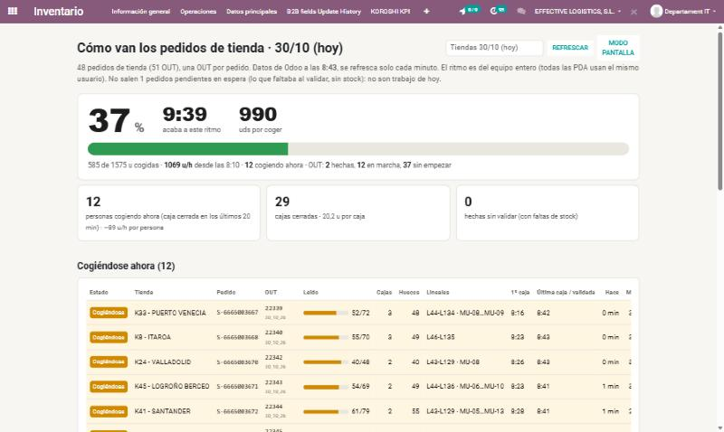
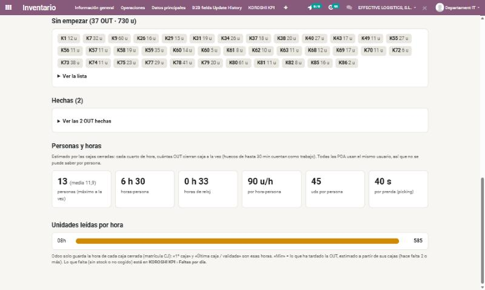
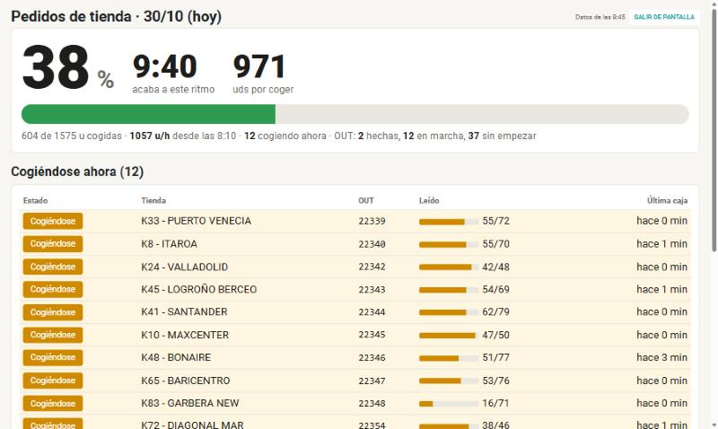
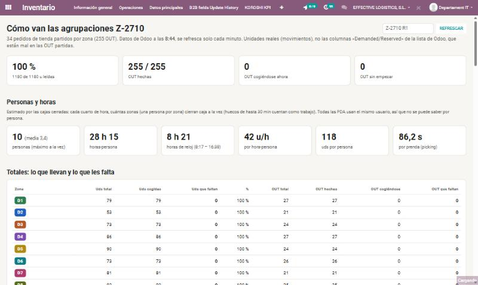
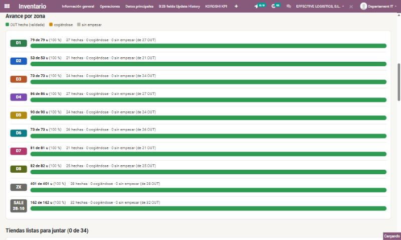
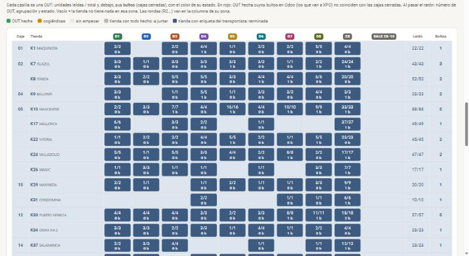
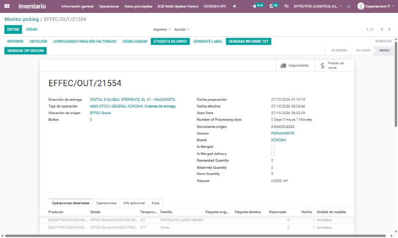

Pantalla en directo de cómo va el picking de las tiendas: por pedido («Tiendas») o por zonas (agrupaciones Z-ddmm).

| Dato | Qué quiere decir |
|---|---|
| % y barra verde | Unidades cogidas sobre el total que hay en stock (lo que no tiene stock no cuenta). |
| acaba a este ritmo | Hora a la que se acabará si el equipo sigue a la misma velocidad (u/h desde la primera caja). |
| personas cogiendo ahora | Estimado por las cajas cerradas en los últimos 20 min (todas las PDA usan el mismo usuario). |
| cajas cerradas | Matrículas CJ cerradas hoy y unidades por caja. |
| hechas sin validar | OUT con todo lo que hay cogido, que solo esperan prendas sin stock. |
Cada fila de «Cogiéndose ahora» enseña la tienda, el pedido, la OUT, lo leído, cajas, huecos, lineales, hora de la 1ª caja, de la última y hace cuánto se cerró la última. Si una OUT lleva más de 20 min sin cerrar caja, se marca.

El botón Modo pantalla quita los menús de Odoo y pone la letra grande, para la tele del almacén. Salir de pantalla vuelve a la vista normal.

Elegir en el desplegable la agrupación del día, por ejemplo Z-2710 R1. Cada ronda (R1, R2) sale en su propia pantalla.


Una fila por tienda (en orden de caja) y una columna por zona. Cada casilla es una OUT: uds leídas / total y, debajo, sus bultos (cajas cerradas). Al pasar el ratón sale el número de OUT y su estado.

| Color | Significa |
|---|---|
| Casilla verde | OUT hecha (validada o con todo lo que hay cogido). |
| Casilla naranja | Cogiéndose. |
| Casilla gris claro | Sin empezar. |
| Fila gris | La tienda tiene todas sus OUT hechas: lista para juntar. Sale también en «Tiendas listas para juntar». |
| Fila azul oscuro | Todas sus OUT tienen la etiqueta del transportista (XPO): tienda terminada. |
| Bultos en rojo | OUT hecha cuyos bultos en Odoo (los que van a XPO) no coinciden con las cajas cerradas. Revisar antes de etiquetar. |
| Casilla vacía | La tienda no tiene nada en esa zona. |

El módulo está en el repo, en odoo/modulos/koroshi_monitor. Cada versión tiene su script con fecha en bin/, por ejemplo bin/actualizar_koroshi_monitor_v1.14_2026-10-27_1126_bultos-por-zona-y-OUT.sh.
sudo bash actualizar_koroshi_monitor_vX.sh
sudo INSTALAR=1 bash actualizar_koroshi_monitor_vX.shHace copia de la carpeta actual en /opt/nath-erp/copias_modulos/, pone la nueva y reinicia Odoo.
| Versión | Qué añadió |
|---|---|
| 1.1 – 1.3 | Modo «Tiendas», cajas cerradas, personas y horas. |
| 1.4 – 1.8 | OUT parciales y sin stock, faltas a KOROSHI KPI, modo pantalla, OUT «hechas» con lo que falta. |
| 1.9 | R1 y R2 en pantallas separadas, matriz a todo el ancho, tiendas a juntar en gris. |
| 1.10 – 1.13 | Tiendas etiquetadas en azul oscuro, casillas que abren la OUT dentro de Odoo, «Monitor picking» en las migas. |
| 1.14 | Bultos por casilla, por tienda y por zona; aviso en rojo si no cuadran con las cajas. |